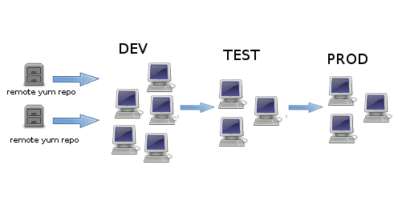
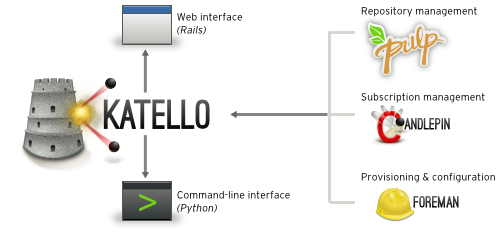

Katello is here to help you take control of your software and your systems in an easy-to-use and scalable manner. It offers a modern web user interface that scales from a small setup with 10 systems to a large installation of thousands of systems across various geographies. Katello can pull in content from remote repositories, local directories and ISOs. You can then organize that content into repositories that are easily searchable, filtered, manipulated and controlled in a locked-down container called an Environment. Below is an example showing 'Dev,' 'Test,' and 'Prod' environments:
Katello integrates the open-source projects Pulp, Candlepin, and Foreman with using a modern Rails Frontend and a Python CLI to make it easier than ever to manage your system and content the way you do business.
